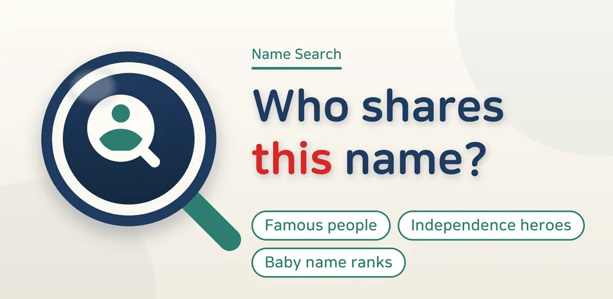
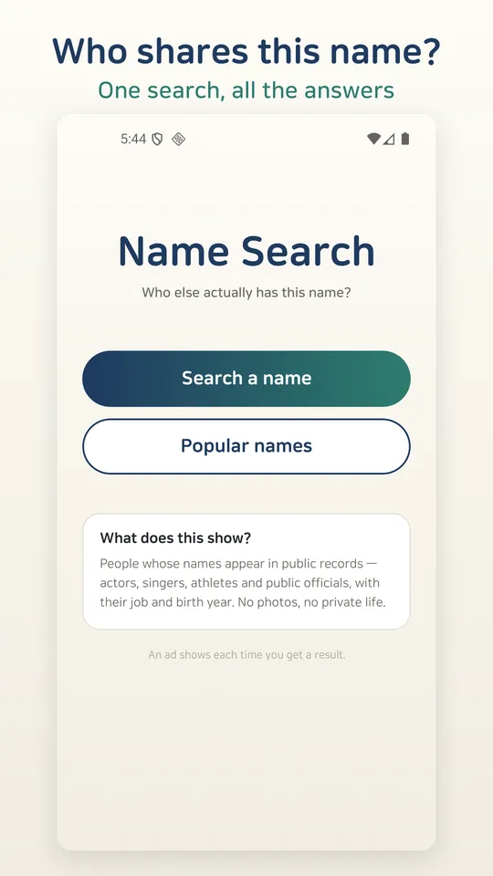
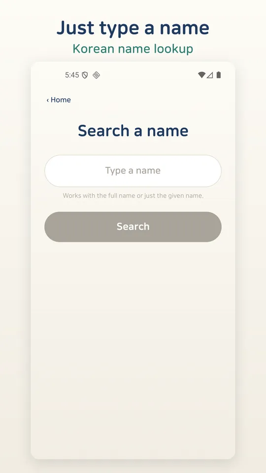
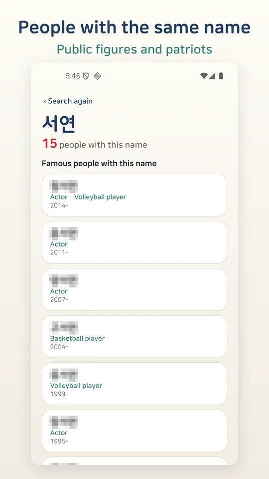
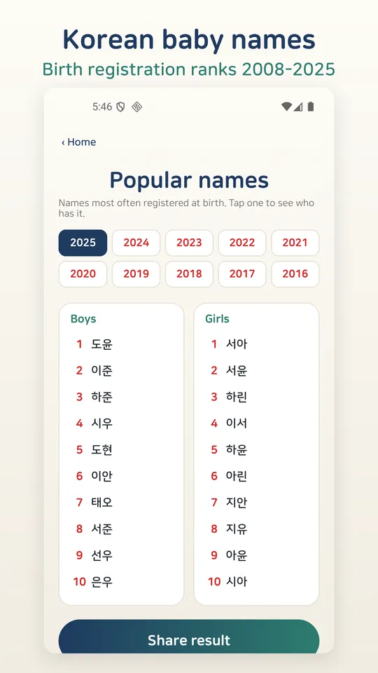
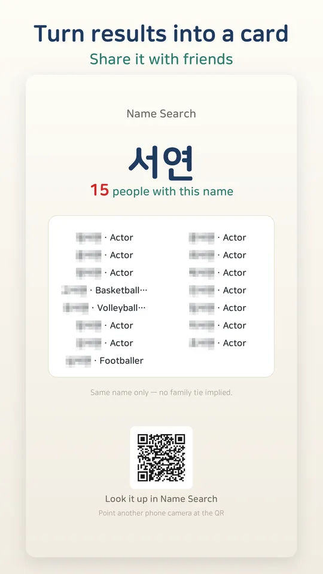

Name Search: Korean Baby Names
Korean name lookup: same-name public figures, patriots, baby name ranks. Offline






About this app
Type a Korean name and see who has actually used it.
Names appear in Korean, and details such as occupation are shown in English.
Name Search is a reference app for Korean names. Before you settle on a baby name, or just out of curiosity about your own, look the name up and see the public figures, independence patriots, and birth-registration rankings tied to it.
What one name search shows
- Public figures with the same name (same name, different people) — actors, singers, athletes, public officials and other public figures, about 17,000 entries with occupation, notable works, and source links
- Korean independence patriots with the same name — about 19,000 entries from the Ministry of Patriots and Veterans Affairs merit records, with honor grade and movement type
- Korean baby name rankings — top 20 boy and girl names by year from the Supreme Court family-registration statistics, from 2008 to this year
For choosing a baby name
Enter a candidate name and see how many well-known people share it, which fields they are in, and where it ranks among this year's registered births. You can tell at a glance whether a name is very common or strongly tied to one well-known person, and compare several candidates with a few searches.
Public record tab
A separate tab lets you look up records officially determined by a national commission, matched only on the full exact name. It is kept apart from the main search results and contains only the official finding and its source.
What makes it different
- Facts from public records, not fortune-telling or character readings
- No photos of any person. Only encyclopedic facts about public figures — occupation, notable works, affiliation, source link
- No controversies or opinions
- Data is bundled inside the app, so search is fast and works offline
- No login, no account, no personal data collection
📌 Data sources (official originals)
- Wikidata (CC0): https://www.wikidata.org
- Ministry of Patriots and Veterans Affairs, e-Gonghun merit records: https://e-gonghun.mpva.go.kr
- Supreme Court of Korea, family-registration statistics: https://efamily.scourt.go.kr
- Presidential Commission report held by the National Archives of Korea: https://www.archives.go.kr
Only public and openly published data is used. Names that match in Korean may still differ in Chinese characters, so a match does not mean the characters are identical.
📌 Disclaimer — this is not a government app
Name Search is an unofficial reference tool made by an independent developer (RealTunaLove). It is not affiliated with, endorsed by, or operated on behalf of the Ministry of Patriots and Veterans Affairs, the Supreme Court of Korea, the National Archives of Korea, or any other government body, and it does not represent any government agency. The information shown is a reference compilation of published records and has no legal effect; please check the official sources above for authoritative information.
Name Search is free and supported by ads. There are no in-app purchases.
Android · free with ads · Developer: RealTunaLove · Store listing in 17 languages
Background story: why I built it